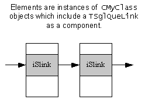
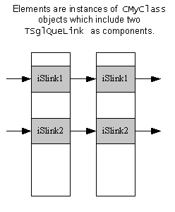
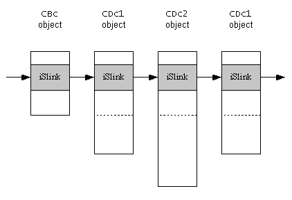

|
| |
To form a singly linked list of CMyClass objects,
include the link object TSglQueLink as a component of
CMyClass:
class CMyClass : public CBase
{
...
TSglQueLink iSlink;
...
};

Although any kind of object can be an element of a linked list, most lists consist of elements which are all of the same type.
An object can participate in more than one list. For example, to
allow CMyClass objects to participate in two singly linked lists,
include two separate TSglQueLink objects as components of
CMyClass:
class CMyClass : public CBase
{
...
TSglQueLink iSlink1;
...
TSglQueLink iSlink2;
};

Elements can also be objects constructed from a variety of classes,
all ultimately derived from the same base class, where that base class includes
the link object as a component. For example, if CBc is a base
class for CD1 which, in turn, is a base class for
CD2, then the elements of the list can consist of a mix of
CBc or CDc1 or CDc2 objects.
class CBc : public CBase
{
...
TSglQueLink iSlink;
...
};
class CDc1 : public CBclass
{
...
}
class CDc2 : public CDc1
{
...
}

New link elements can be inserted at the beginning or the end of the
list, but not into the middle of the list. The functionality for this is
provided by the header TSglQue<class T>.
Copyright ©2002 Symbian Ltd. 6.1-00174 |
|